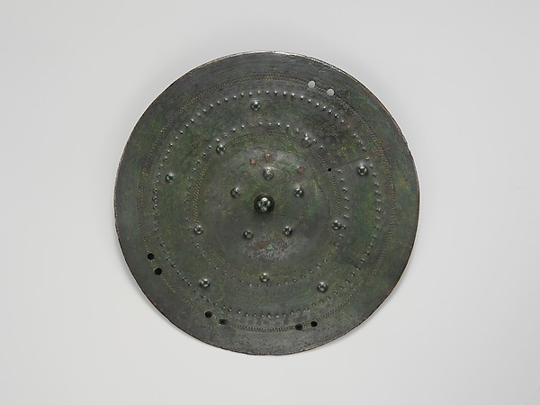
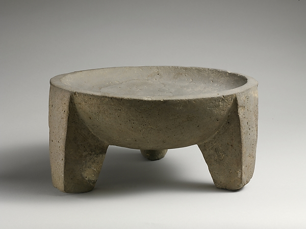
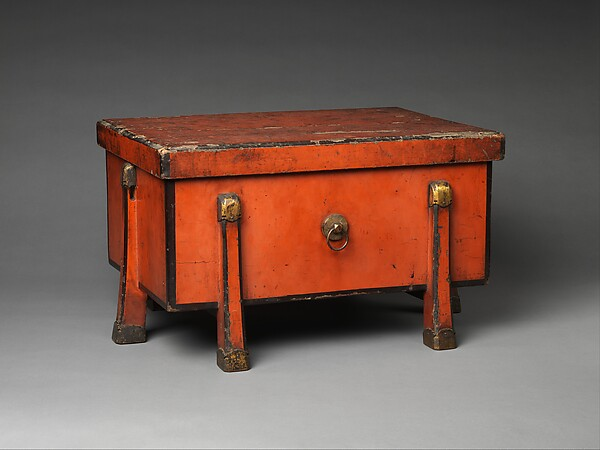

A · Field-cast bronzeWorking recommendation
Source · The Met OA/CC0 · object 255365

Bronze shield boss · 7th century BCE
Evidence: patina, shallow working bands, sparse raised nodes.
Evidence: patina, shallow working bands, sparse raised nodes.
Generated-placeholder · original CSS abstraction
Tradeoff: closest shell fit; must avoid bright oxidation noise and generic fantasy rivet clutter.
B · Monument-cut basaltArchitectural alternative
Source · The Met OA/CC0 · object 243937

Basalt tripod vessel · ca. 2500–1050 BCE
Evidence: planar mass, blunt transitions, porous matte surface.
Evidence: planar mass, blunt transitions, porous matte surface.
Generated-placeholder · original CSS abstraction
Tradeoff: clearest structural read; wide rails risk consuming content area at compact sizes.
C · Joined dark woodWarm alternative
Source · The Met OA/CC0 · object 40272

Storage Case (Karabitsu) · 1422
Evidence: legible joinery, metal at stress points, wear history.
Evidence: legible joinery, metal at stress points, wear history.
Generated-placeholder · original CSS abstraction
Tradeoff: tactile and practical; grain noise and culture-specific fittings must not be copied.